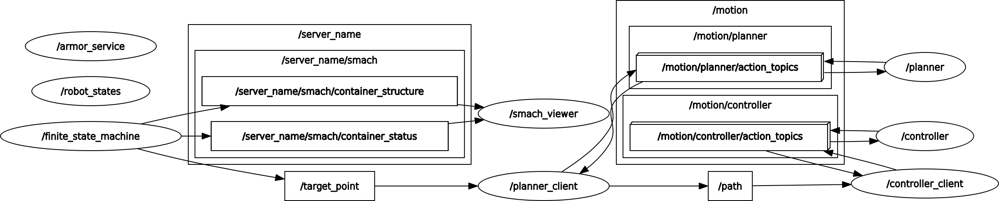

Software Architucture
In order to simulate the movements of the robot and its stimulus, the approach presented in the arch_skeleton example is used with some changes (e.g. planner and controller delay time, battery level).
Other main part of software architucture consists of finite state machine for having a better overview of process states and transitions among them and aRMOR for using the ontology of topogical map for controling the robot in ROS.
The software architucture is represented in the following figure.

The components of this software architucture can be described as follows:
robot-state
The robot-state is a node that encodes the knowledge shared among the other components,
and it implements two services for robot position (i.e., state/set_pose and state/get_pose)
and two other for robot battery level (i.e., state/set_battery_level and state/get_battery_level)
motion planner
The planner node implements an action server named motion/planner. This is done by the means of the
SimpleActionServer class based on the Plan action message. This action server requires the state/get_pose/
service of the robot-state node, and a target point given as goal.
Given the current and target points, this component returns a plan as a list of via_points, which only
consist of the starting and ending points for simplicity. Morever the delay time for generating the path
is considered to be small to prevent conflicts between robot real situation and finite state machine.
When a new via_points is generated, the updated plan is provided as feedback. When all the
via_points have been generated, the plan is provided as results.
There is also a planner_client node, which gets the target point from finite_state_machine node
through /target_point topic and sends it to the planner server as action goal. When the result is found
as it is described above, publishes it to the /path topic to be used by the controller_client node.
motion controller
The controller node implements an action server named motion/controller. This is done by the means of the
SimpleActionServer class based on the Control action message. This action server requires the
state/set_pose/ service of the robot-state node and a plan given as a list of via_points by the
planner.
Given the plan and the current robot position, this component iterates for each planned via_point and
waits to simulate the time spent moving the robot to that location. The waiting time is computed using the
roobot speed and the eucledian distance between the points. Each time a via_point is reached the
state/set_pose service is invoked, and a feedback is provided. When the last via_point is reached,
the action service provides a result by propagating the current robot position, which has been already updated
through the state/set_pose service. Morever in each movement step, the robot battery level is read by the
controller node using state/get_battery_level and after decreasing gets set through state/set_battery_level.
The provided controller_client node, subscribes /path topic to get the via_points and then sends them
to the controller server as an action goal.
finite state machin - aRMOR
Defines the states and transitions for the finite state machine of the topological map, it also
uses topological_map.py helper script to update the ontology while the process is running, and
retreives the target room based on last visit times, finaly sends the target room pose to the
planner_client through /target_point in order to find the path.
node graph
The node graph is represented in the following figure.
{kind=link}